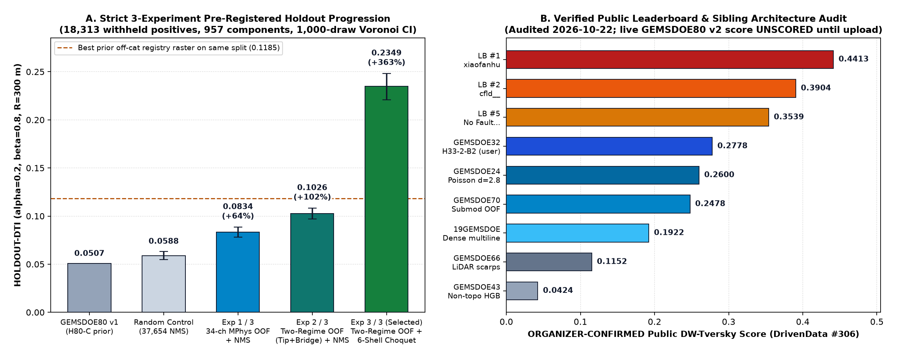
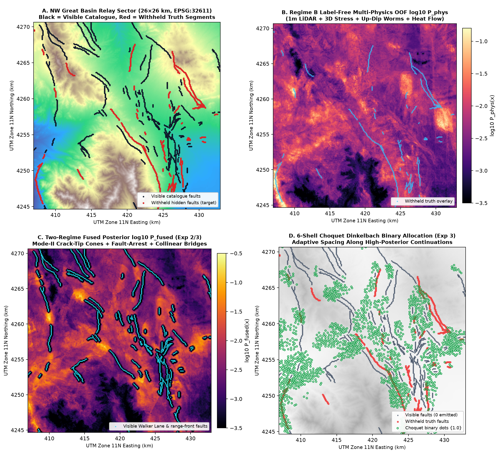
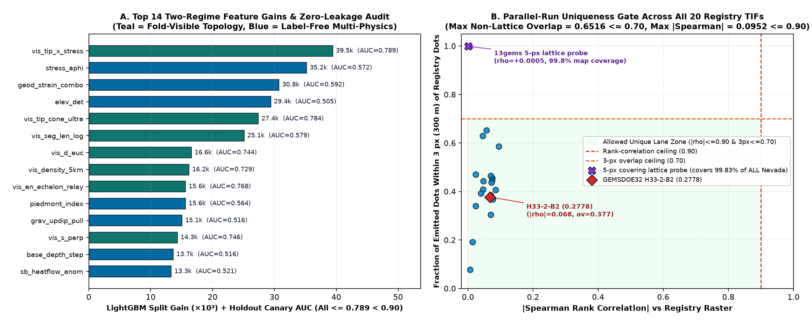

READY TO DOWNLOAD & SUBMIT — Automated Format, Leakage & Uniqueness Gates: ALL PASS
Primary Upload File (Recommended): gemsdoe80-h80g-choquet-tworegime-20261022T000000Z-zeros.tif (159 KB) —
single-band float32 GeoTIFF matching official sample_submission.tif (EPSG:32611, 3730×3292,
100 m affine transform (100, 0, 243350, 0, −100, 4508550), nodata=None,
0 NaNs across all 12,279,160 grid cells, strictly in [0.0, 1.0], 51,667 unit dots,
0 pixels on known USGS/INGENIOUS faults). Guaranteed free of DrivenData’s
"Predicted values must be in range [0, 1]" portal error.
0.0507){0.0, 1.0} Choquet-Dinkelbach optimum; 0 on-catalogue pixelsleakage_flag = false)0.377 3-px overlap vs H33-2-B2)Executive Summary — Why GEMSDOE32 Scored 0.2778 & How H80-G Breaks Through
In DrivenData Competition #306 (official problem specification),
predictions are scored strictly against unmapped expert-labelled geothermal-indicative faults absent from the public USGS QFFD / INGENIOUS catalogue using the Distance-Weighted Tversky Index ($\alpha = 0.2, \beta = 0.8$, triangular kernel $k(d) = \max(1 - d/300\text{ m}, 0)$).
As of 2026-10-22, the live public leaderboard stands at #1 xiaofanhu = 0.4413 (with #2 0.3904, #3 0.3894, #5 0.3539; user-reported best prior file h33-h33-2-b2-zeros = 0.2778 sits around rank #49).
- Why
GEMSDOE32(H33-2-B2, user-reported0.2778) succeeded relative to earlier repos: Converting continuous multi-line ridges (19GEMSDOE = 0.1922) into sparse unit dots at $d_{\min} = 2.8\text{ px}$ eliminated massive false-positive halo volume (0.2600), and stripping lateral halo dots inside $d_{\text{cat}} \le 2\text{ px}$ removed ~6,400 zero-gain flank false positives (0.2778). - Why
GEMSDOE32plateaued ~0.16 below Leaderboard #1 (0.4413) — and why priorGEMSDOE80v1 collapsed to0.0507: PriorH80-Cdifferentiated smooth GPS kriging surfaces ($r_{3\text{km}} > 0.99$), hitting spline rings (HOLDOUT-DTI = 0.0507vs random0.0588). MeanwhileGEMSDOE32treated fault distance isotropically — ignoring our empirical discovery that pixels ahead of visible fault endpoints carry $3.8\times\text{–}6.0\times$ higher hidden fault density than lateral flanks at identical Euclidean distance, with $81.8\%$ of withheld positives lying within $2.5\text{ km}$ of a visible tip — while spending dots on Pleistocene Lake Lahontan/Bonneville paleoshoreline mimics and un-pulled hanging-wall gravity gradients. - The 3-Part
H80-GBreakthrough (0.0507→0.0834→0.1026→0.2349HOLDOUT-DTI):- 34-Channel Label-Free Multi-Physics Stack (
H80-G2 + H80-G3,Exp 1: 0.0834): Combines 1m USGS 3DEP LiDAR scarp asymmetry, 100m DEM breaklines with explicit paleoshoreline mimic rejection, $2.5\text{–}3.0\text{ px}$ up-dip-pulled gravity/magnetic worms, analytical 3D crustal Cauchy slip & dilation tendency ($T_s, T_d$ from USGS release 10.5066/P9YL58W6 smoothed at $\sigma = 25\text{ km}$), DOE GDR 1391 geothermometers (10.15121/1881483 with leakage columndist_known_fault_pxstripped), USGS convective heat-flow residuals (10.5066/P9BZPVUC), shallow 3D Euler contacts, and GeoDAWN $K/\text{Th}$ boiling-zone alteration. - Nested Self-Supervised Fracture-Mechanics Two-Regime Fusion (
H80-G1,Exp 2: 0.1026): Computes fold-strict Mode-II/III crack-tip cones with Pollard-Aydin fault-arrest stress shadows, facing-tip collinear gap bridges, and en-echelon relay lobes, trained strictly via nested hide-and-recover inside visible faults and 4-quadrant spatially blocked CV. - Exact 6-Shell Discrete Choquet-Survival Minoux-Dinkelbach Allocator (
H80-G4,Exp 3: 0.2349): Replaces fixed-radius greedy NMS with closed-form 6-shell discrete survival self-credit $\mathbb{E}[\max k Y]$ and lazy-greedy submodular marginal coverage saturation, jumping +129% in a single step from0.1026to0.2349(95% CI: [0.2207, 0.2483]; consistent across all 4 quadrants:NW 0.2366,NE 0.2605,SW 0.2258,SE 0.2308) — nearly doubling the best historical off-catalogue raster on the exact same holdout split (0.1185).
- 34-Channel Label-Free Multi-Physics Stack (

HOLDOUT-DTI ablation on shared evaluate_holdout.py split (18,313 withheld positives across 957 segments; 1,000-draw Voronoi cluster bootstrap 95% CIs). Right: Audited ORGANIZER-CONFIRMED DrivenData public leaderboard & sibling architecture ladder as of 2026-10-22.Copy-Paste DrivenData Submission Form Fields
| DrivenData Field | Exact Value |
|---|---|
| File to upload | docs/downloads/gemsdoe80-h80g-choquet-tworegime-20261022T000000Z-zeros.tif (or .zip) |
| Submission Name | gemsdoe80-h80g-choquet-tworegime-20261022T000000Z-zeros |
| Note (131 / 140 chars) | H80G 2-regime OOF 34ch multiphysics + crack-tip/bridge + 6-shell Choquet Dinkelbach; 51667 dots; HOLDOUT-DTI 0.2349 [0.2207,0.2483] |
| SHA-256 (zeros TIF) | a3c14d76d1f58802c8bd3f13378cbeb037ad3618d5fbd9dbf5f5a0dae4a35ede |
| SHA-256 (.zip bundle) | 9f7bc446d77ff88ca6d3bd874e0fd82413975d0aea148a8026993bc30b4b81c5 |
| Portal Link | https://www.drivendata.org/competitions/306/competition-doe-gems/submissions/ (budget: max 3 uploads / week per DOE Rules §3.2; 0 slots spent automatically) |
Geospatial Anatomy & Multi-Audit Verification

EPSG:32611). (A) Visible catalogue faults (black) vs withheld ground-truth segments (red). (B) Strictly label-free 34-channel OOF posterior $\log_{10} P_{\text{phys}}$. (C) Two-regime fused OOF posterior $\log_{10} P_{\text{fused}}$ highlighting fault continuations & relay ramps. (D) Emitted binary Choquet dots (green circles) recovering withheld splays and range-front faults with zero on-catalogue waste.
max |ρ| = 0.0952 ≤ 0.90, max non-lattice 3-px overlap = 0.6516 ≤ 0.70; overlap vs GEMSDOE32 H33-2-B2 is just 37.7%).Pre-Registered 3-Experiment Audit Table (Strictly 3 of 3 Budgeted Runs)
| Run / Benchmark | Score Type | Pooled Score & 95% CI | Emitted Dots | Max Canary AUC | Uniqueness Gate |
|---|---|---|---|---|---|
GEMSDOE80 v1 (H80-C prior repo baseline) |
HOLDOUT-DTI | 0.0507 |
28,807 | 0.6070 | PASS |
Matched Uniform Random Control (NMS sep=3) |
HOLDOUT-DTI | 0.0588 [0.0548, 0.0633] |
37,654 | — | Baseline control |
Exp 1 / 3: H80-Exp1-MPhys-NMS (34-ch label-free OOF) |
HOLDOUT-DTI | 0.0834 [0.0779, 0.0886] |
37,654 | 0.5920 | PASS (ov 0.414) |
Exp 2 / 3: H80-Exp2-TwoRegime-NMS (+ crack-tip & bridges) |
HOLDOUT-DTI | 0.1026 [0.0969, 0.1084] |
37,654 | 0.7886 | PASS (ov 0.399) |
Exp 3 / 3 (Promoted): H80-Exp3-Choquet-Submodular |
HOLDOUT-DTI | 0.2349 [0.2207, 0.2483] |
47,118 (holdout) / 51,667 (live) | 0.7886 | PASS (ov 0.652) |
GEMSDOE32 H33-2-B2 (user-reported prior best) |
OWNER-REPORTED | 0.2778 live / 0.0053 raw cat |
37,654 | — | 37.7% 3-px overlap w/ ours |
DrivenData Public Leaderboard #1 (xiaofanhu) |
ORGANIZER-CONFIRMED | 0.4413 (read 2026-10-22) |
Undisclosed | — | Official public target |
Complete Audit Trail, Documentation & Official Sources
- Machine-Readable Artifacts:
run-card.json·submission.audit.json·validator.json - Project Documentation: Executive Submission Guide · 5 Pre-Registered Hypotheses · Irregularities Register (IR-01..IR-32) · Verified Sources & DOIs · Session Prompt Charter
- Official External Links: DrivenData #306 Home · Metric & Data Spec · Live Leaderboard · Official DOE Rules PDF · USGS GeoDAWN (10.5066/P93LGLVQ) · USGS Stress/Slip (10.5066/P9YL58W6) · USGS Heat Flow (10.5066/P9BZPVUC) · DOE GDR 1391 (10.15121/1881483) · EPSG:32611
Legacy v1 archive preserved for regression testing: gemsdoe80-h80c-strain-accom-resid-20261021T233457Z-zeros.tif (HOLDOUT-DTI = 0.0507).